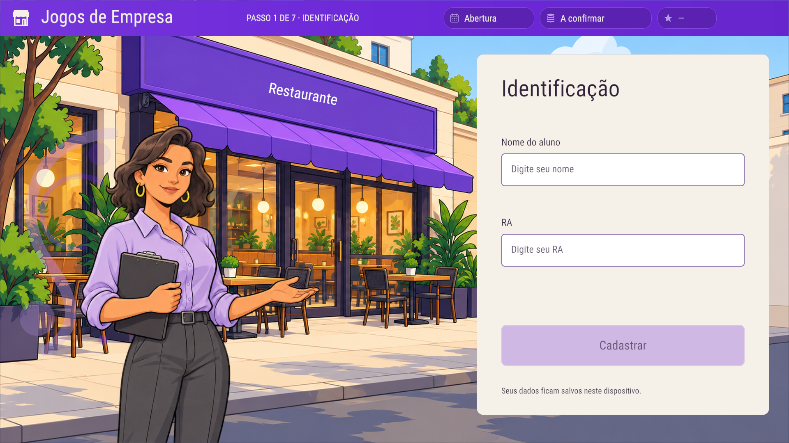
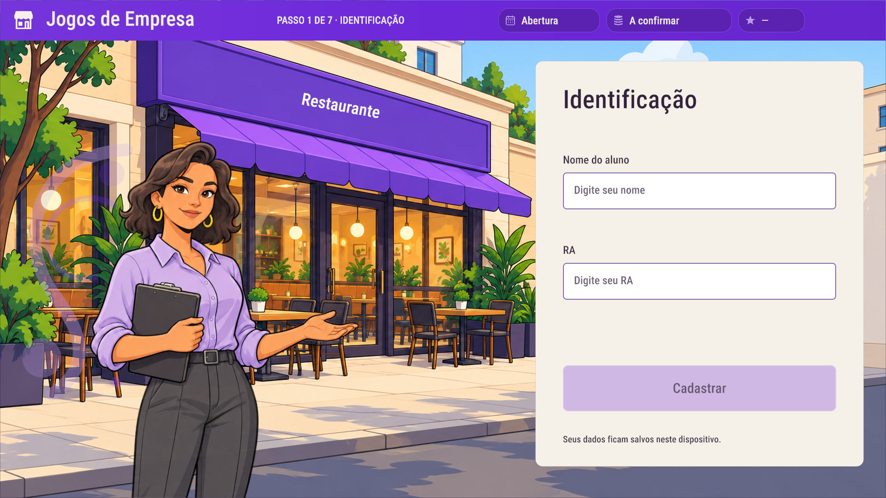
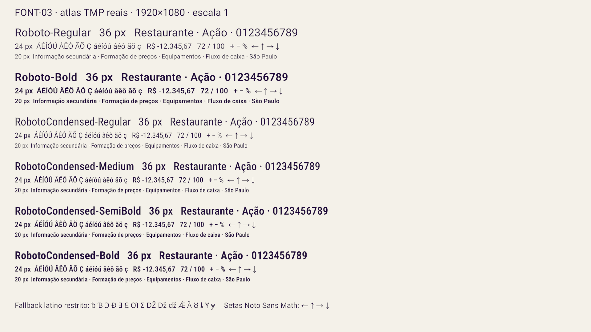

FONT-03 · TMP assets
Six real faces, 536/536 declared codepoints, finite explicit fallbacks. Temporary live-screen swaps; scene restored. Editor Game View 1920×1080.
identification-baselineidentification-Roboto-Regularidentification-Roboto-Boldidentification-RobotoCondensed-Regular
identification-RobotoCondensed-Medium
identification-RobotoCondensed-SemiBoldidentification-RobotoCondensed-Boldall-faces-specimen